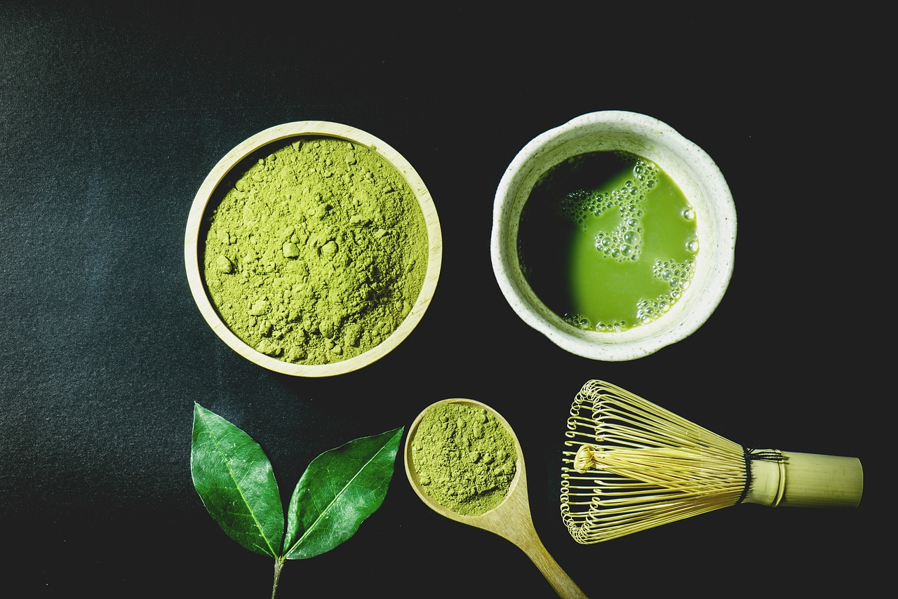

Matcha is a finely ground powder made from specially cultivated green tea leaves. It’s celebrated for its vibrant green color, distinct umami flavor, and impressive health-boosting properties. More than just a drink, matcha carries deep cultural significance, especially in Japan, where it plays a central role in the traditional tea ceremony.
These spots are known for their delicious and rich matcha that is not too bitter, nor too dilluted. Below are a few spots that you can click on and check out: